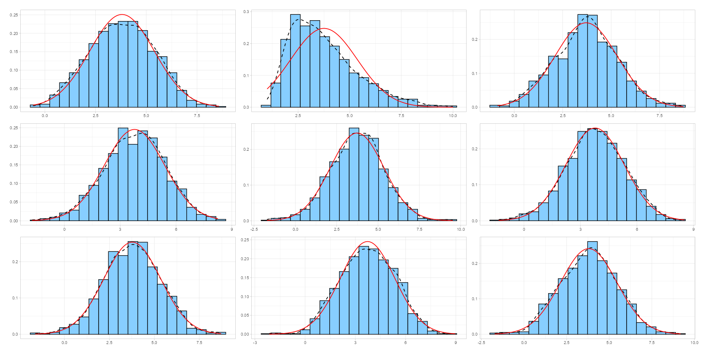

exsampler: Normal Simulation Guessing Game
Overview
exsampler is a tool to assist visual inspection of (non)normality. It displays a 3×3 grids of either histograms, QQ plots, detrended QQ plots, or PP Plots where one randomly assigned plot contains the real data and the eight other plots contain data sampled from simulated normal distributions (Shapiro–Wilk p’s > 0.05) with the same number of observations, mean, and standard deviation (and optionally, the same rounding). Plots from simulated data help calibrate the user’s eyes for visually inspecting the distribution of their data. Selecting a plot reveals the location of the real data.
Users can choose to view plots from an example dataset with labeled distributions, or use with their own data already loaded in their global environment.
Installation
First install Rtools from CRAN. Then run the following code:
install.packages("pak")
pak::pak("WikstromD/exsampler")Shiny app
exsampler::run_app()What you’ll see
When you choose a variable and generate plots, the app displays a
3×3 grid of panels. One panel contains
the real data; the rest are simulated datasets sampled from normal
distributions with the same number of observations, mean, and standard
deviation. Below is an illustrative example using the variable
“Heavy_Right_Skew” from the example dataset included with
exsampler.
-
Histogram – binned frequencies with density and
normal curves using
ggplot2.

-
QQ plot – compares sample quantiles to a normal
reference line using
qqplotr.
-
Detrended QQ plot – compare quantiles’ deviation
from what’s expected from a normal distribution using
qqplotr.
-
PP plot – plots the proportion of observations at
or below each value against the proportion predicted by a normal model
using
qqplotr.
Click Generate Plots to create a fresh grid of simulations. The sidebar lets you choose the variable, plot type, and whether to match simulated data granularity (useful for integer scales).